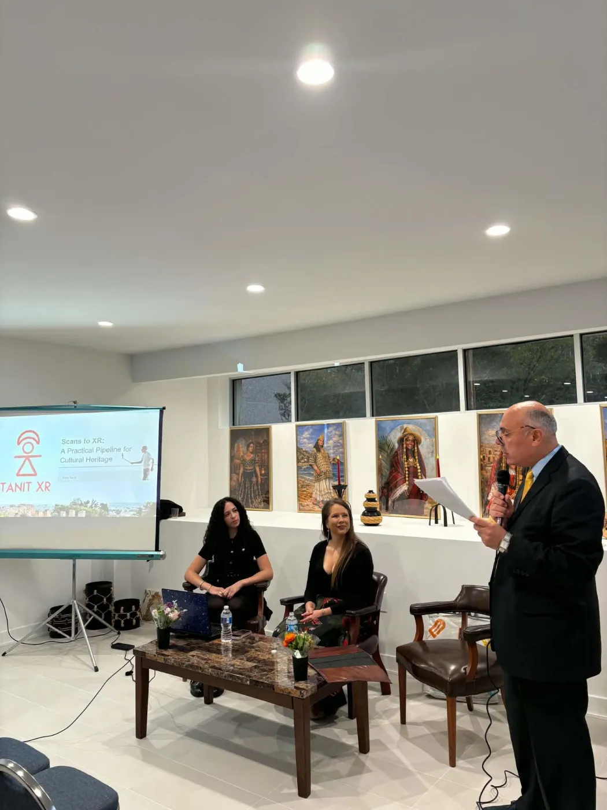
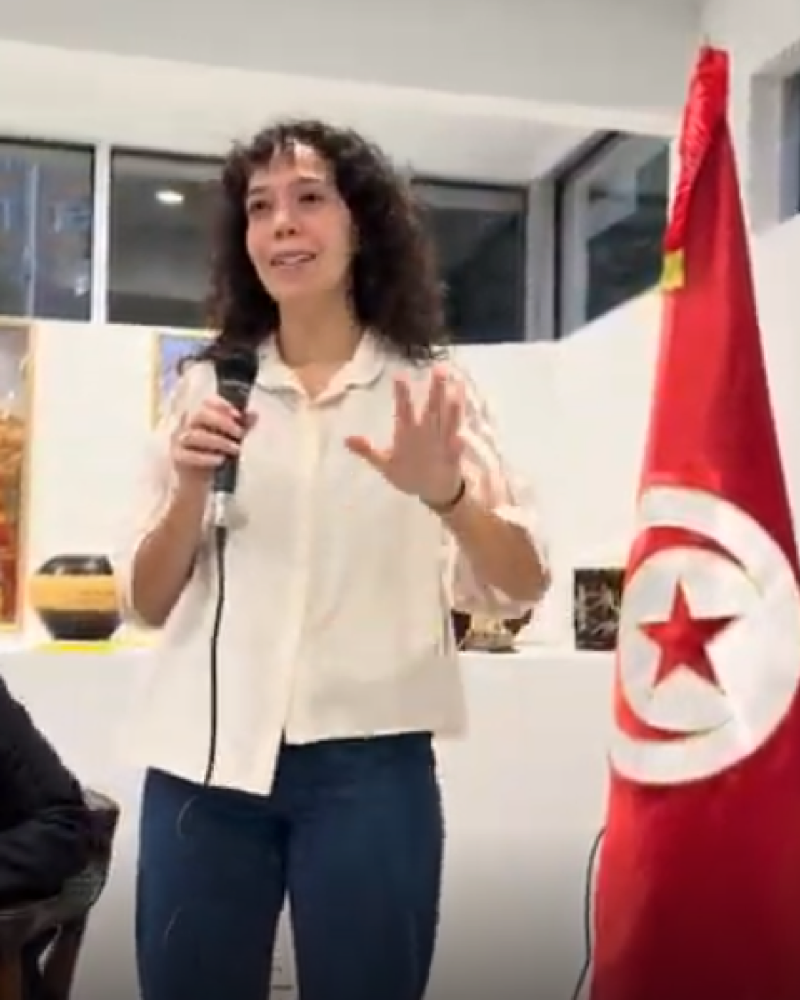
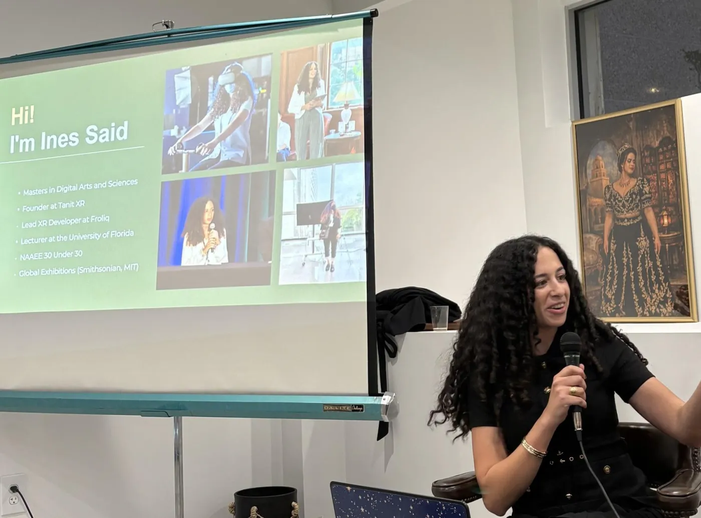
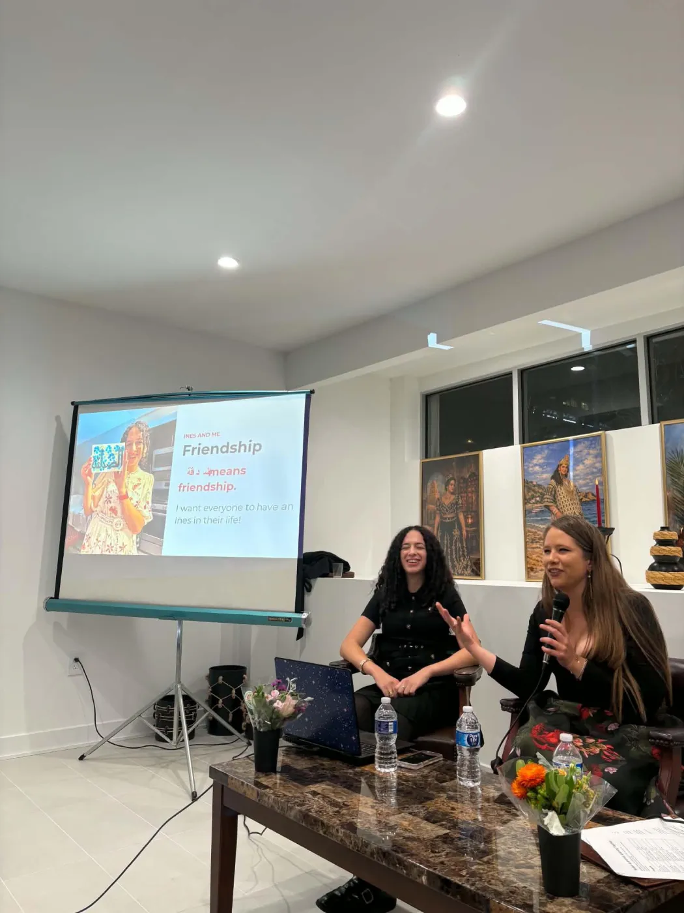
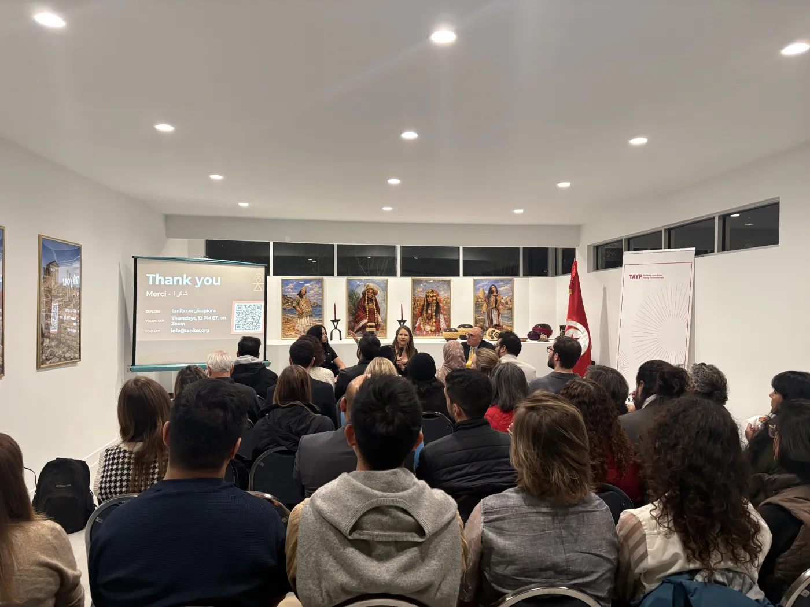
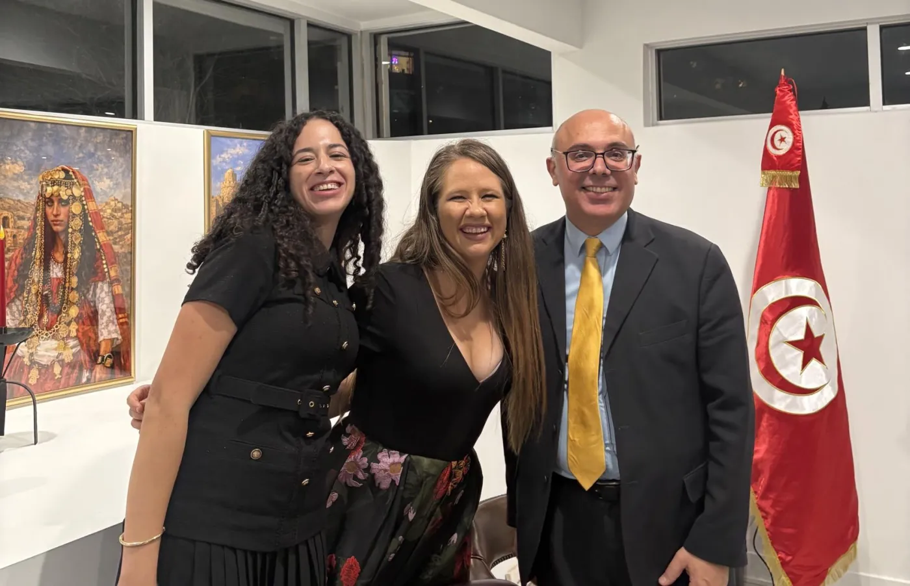
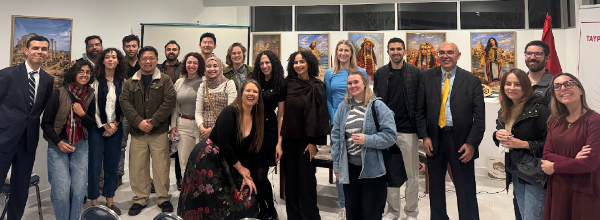

By Caroline Nickerson · Published 2026-10-30
At “Tunisia & America: Learning Together,” volunteers showed how a smartphone scan can connect people, places, and centuries of history.
What does it feel like to explore ancient Carthage? At the Embassy of Tunisia in Washington, D.C., guests had a chance to find out. Through a virtual reality headset, they could see a digital replica of a carved stone from the Tophet of Salammbo and examine details a volunteer had captured in Tunisia with a smartphone.
The demonstration capped “Tunisia & America, Learning Together,” hosted on October 23, 2026, by the Embassy of the Republic of Tunisia in partnership with Tanit XR and the Tunisian American Young Professionals (TAYP).
To begin, Chargé d’Affaires Mohamed Nejib Gorgi gave the Embassy’s official welcome, and Narmine Ben Aissa introduced the evening for TAYP. Both shared their excitement for more Tunisian-American collaborations. First Secretary Mohamed Nidhal Ezzaier, who did much of the planning with Tanit XR, welcomed the team to the Embassy.


Then, Tanit XR founder Ines Said and Dr. Caroline Nickerson told the story of the volunteers and friendships behind TanitXR.
In her presentation, “Scans to XR: A Practical Pipeline for Cultural Heritage,” Said introduced guests to Tunisia’s Roman villas, mosaics, and amphitheaters.

Flooding and coastal erosion threaten sites across the country, and few communities can afford professional scanners.
In January 2026, Storm Harry stripped sand from Tunisia’s coast near Nabeul, exposing part of the ancient city of Neapolis. Tunisia’s national news agency reported that heritage officials moved quickly to document the finds. Tanit XR mobilized its volunteers within days.
Volunteer Youssef Lakdhar scanned the newly visible ruins, recording where the stones lay just after the storm. Researchers can return to that record as the shoreline continues to change.
Said wants people who know these places well to be able to document them with the phones they already carry.
As a core part of TanitXR’s model, volunteers learn photogrammetry in a six-week course led by Mark Jeffcock. Each week, they photograph an object from several angles, turn the overlapping images into a 3D model, and bring it back to class for feedback.
After the course, volunteers in Tunisia and beyond can go to the field. For statues and buildings, the team uses Scaniverse, which works even at sites without cell service. For smaller objects, such as pottery, volunteers often use Kiri Engine.
The original scan stays in the archive while volunteers from around the world research the object’s history and prepare a copy for public use.
Volunteer Rachel West, for example, made the model of the Carthage stone small enough to load on a phone.
The team has documented more than 70 artifacts at over 20 locations in Tunisia alone. Tanit XR was named a 2026 Auggie Award finalist for Best Societal Impact.
TanitXR is actively expanding to other countries, including Nigeria, and volunteers are instructed to only scan sites they are legally allowed to scan, as well as to scan other aspects of their heritage (like handicrafts) they might want to share with the world.
In “A Year with Tanit XR,” Nickerson showed how citizen science and civic technology come together in the museum.
Citizen science is meaningful public engagement in research – actually creating real knowledge. Civic technology is technology built for social good.
In Nickerson’s eyes, TanitXR is both a citizen science and civic technology project.
People in Tunisia and beyond create a record of their own heritage with each scan. Then, working with teammates on four continents, volunteers research what the objects were used for, translate descriptions, and decide how to tell their stories to the public.
Nickerson leads partnerships and community for Tanit XR and directs Florida Community Innovation, the project’s nonprofit fiscal sponsor.
As SciStarter (the world’s largest citizen science database) founder Darlene Cavalier wrote in a message Nickerson shared during the talk, “Tanit XR is pioneering a new model for citizen science, empowering people to preserve heritage before it disappears.”
Part of what distinguishes TanitXR is that global volunteers come to love Tunisia and learn about the heritage by engaging deeply with the scans and building celebratory experiences.
For example, three scans from the collection became the starting point for an exhibit at MIT Reality Hack. Said, Nickerson, Elena Piech, and Anthony Ovando built it around Queen Elissa, also known as Dido, the legendary founder of Carthage. Visitors select a burial marker, a draped statue, or a Roman column to hear Nura, the museum guide, tell part of Elissa’s story. The team spelled out names phonetically so Nura would use their Tunisian Arabic pronunciations.
Nickerson also led a citizen science workshop at Georgia Tech’s ImmerseGT. The winning team in Tanit XR’s heritage challenge built From Mystery to History, a proof of concept design for augmented reality that lets visitors compare possible reconstructions of a damaged artifact.
Then, at Florida Community Innovation’s CityCamp Gainesville Hack Day, participants used the scans to design a history lesson and tell a story through maps.
TanitXR, by engaging global volunteers, fosters lasting love for Tunisia.

On visits to Tunisia in November 2025 and August 2026, Nickerson explored the Roman amphitheater at El Jem and the seaside ruins of Kerkouane with Tunisian friends. Ultimately, TanitXR is a labor of love, grounded in deep friendship. “I want everyone to have an Ines in their life!” she wrote on a slide about Said.
Nickerson hopes that every American ends up with a Tunisian best friend, just like her. In fact, the two countries signed their Treaty of Peace and Friendship in Tunis in August 1797. At the Embassy 229 years later, Nickerson urged people in both countries to keep that friendship alive by studying abroad, working together, and visiting one another.
After the talks and audience questions, guests stayed to try the headsets. The stone they held in Washington is part of Tanit XR’s open 3D collection, available on a phone or computer. Volunteers are still building the larger community museum and hope to share the emergency scanning methods they used at Neapolis with other communities.

Many volunteers had no ties to Tunisia when they joined, Nickerson said. Now they meet every week to study its history together. Anyone with an interest in history, art, research, or technology can join them on Zoom on Thursdays at noon Eastern. No previous 3D experience is required.

Tanit XR thanks the Embassy of the Republic of Tunisia for hosting, TAYP for co-organizing the evening, and everyone who shared ideas, asked questions, and helped bring Tunisia’s heritage into the room.

You read it to the end
Three stories read